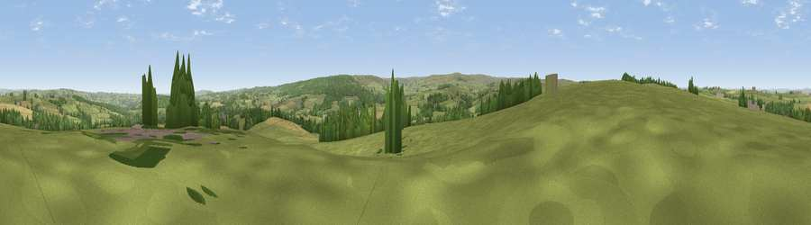

Viewpoint near Whitley Chapel
#16966 in England · top 39% of its area beats it · near Whitley ChapelWhere it is
The exact computed spot (NY 92075 59575). Click the marker for map links.
The view, rendered

A 360° render of this exact spot computed from the terrain model, tree cover and land cover — summer colours, afternoon light, calibrated against photographs of famous viewpoints. Real trees, hedges and buildings will differ in detail.
The panorama
Grey silhouette: terrain skyline in each direction (720 bearings, Earth curvature and refraction included). Dashed green: skyline with trees (+15 m) and buildings (+8 m) as obstacles. Blue strip: how far the ground is visible on each bearing.
Where the view opens
Wedge length = distance to the farthest visible ground on that bearing (vegetation-aware). Rings at 10, 25 and 50 km.
What fills the view
73% grassland · 18% woodland · 9% cropland ·
Angular shares of the visible panorama (visual magnitude), not map area. Landscape diversity 0.34 (0–1 Shannon).
Key numbers
More beautiful places nearby
The staircase of upgrades: each row has a higher view potential than everything closer. Driving times are estimates from straight-line distance, calibrated against real road routing — check an actual route before setting out.
| Place | Direction | Drive | Score |
|---|---|---|---|
| Viewpoint near Hexham | N · 3 km | ~7 min | 62.4 |
| Viewpoint near Blanchland | SSE · 7 km | ~14 min | 67.7 |
| Viewpoint near Whitley Chapel | S · 7 km | ~15 min | 68.2 |
| Watson's Pike | SSW · 7 km | ~15 min | 68.3 |
| Viewpoint near Fourstones | NNW · 8 km | ~17 min | 71.4 |
| Viewpoint near Allenheads | SW · 18 km | ~31 min | 74.6 |
| Pontop Pike | ESE · 24 km | ~39 min | 77.8 |
| Little Dun Fell | SW · 34 km | ~52 min | 78.4 |
54.93079, -2.12520 · source: screening · position refined by local search. Computed location — check access rights before visiting.